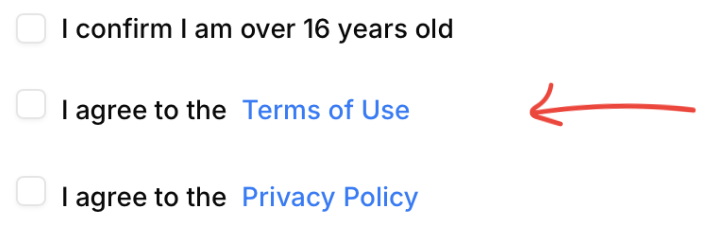
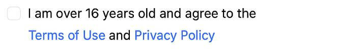
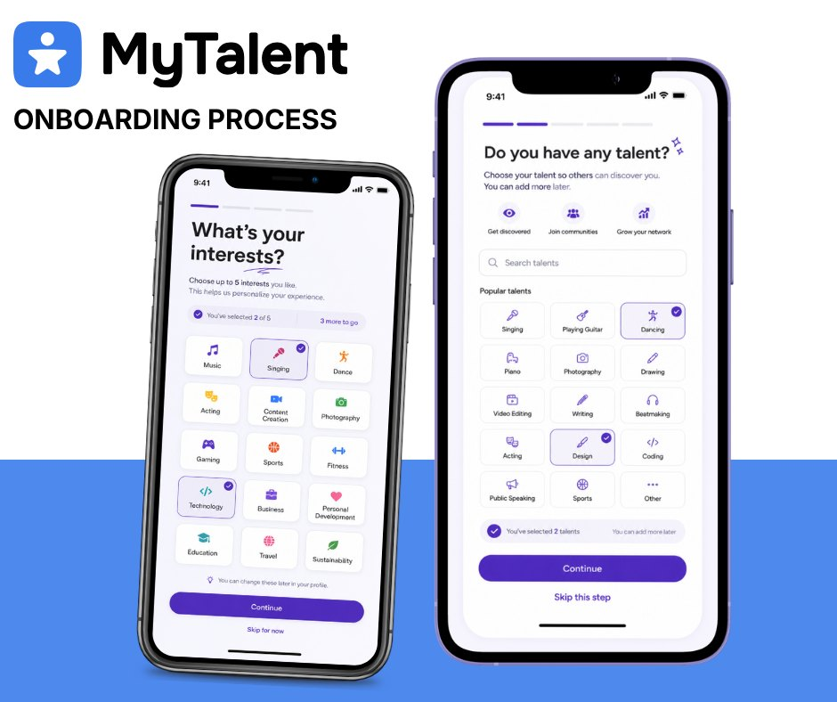

MyTalent – å gjøre det enklere å vise frem talentene sine
MyTalent er en digital plattform der mennesker kan vise frem talentene sine og bli oppdaget. Jeg jobbet som Interaction Specialist og Delivery Manager, med UX-evaluering, brukertesting, designarbeid og koordinering av designteamet.

- Min rolle
- Interaction Specialist og Delivery Manager
- Periode
- Desember 2025 – juni 2026
- Metoder
- Think-aloud-tester, heuristisk evaluering, testrapporter, designforslag
- Resultat
- Over ti testrapporter med funn og konkrete forbedringsforslag til design- og utviklingsteamet
Utfordringen
Nye brukere skulle raskt forstå hva MyTalent er, lage en konto og komme i gang med profilen sin. I de første testene ble det tydelig at mange stoppet opp allerede i registreringen og onboardingen – og at flere ikke skjønte hva som gjorde plattformen annerledes.
«Hvorfor skulle jeg bruke dette i stedet for YouTube? Er det for å bli oppdaget, tjene penger, eller hva?»
Min rolle
- Brukertesting Jeg planla og gjennomførte tester av onboarding, registrering, navigasjon og profiloppsett på både mobil og web.
- UX-evaluering Jeg gjorde en heuristisk evaluering av innlogging og registrering, der hvert funn ble koblet til et UX-prinsipp.
- Dokumentasjon Jeg skrev testrapporter med problem, sitater og konkrete forslag, klare til å prioriteres av teamet.
- Designteamet Som Delivery Manager fordelte jeg oppgaver, fulgte opp leveranser og var bindeledd mellom designerne og ledelsen.
Designprosessen
- 1Planlegge Konkrete oppgaver, som å logge inn, bytte til registrering og lage en konto.
- 2Teste Deltakerne tenkte høyt mens de løste oppgavene. Jeg testet både med helt nye brukere og med brukere som hadde brukt plattformen over tid.
- 3Analysere Jeg samlet funnene etter område – registrering, onboarding, feed, profil og navigasjon – med sitater fra deltakerne.
- 4Foreslå Hvert funn fikk et konkret forslag, ofte ned på knappetekst og microcopy, som ble levert til design- og utviklingsteamet.
Fra innsikt til designbeslutning
Eksempler fra testrapportene. Dette er forslagene jeg leverte – ikke nødvendigvis det som er implementert.
Registrering
Tre separate avkrysningsbokser for alder, vilkår og personvern.
Deltakerne opplevde det som unødvendig innsats: «Dette kunne vært én avkrysning, ikke tre.»
Slå sammen til én setning med tydelige lenker.


E-postverifisering
Skjermen for å bekrefte e-post hadde en «Skip for Now»-knapp.
Deltakeren var usikker på hva som egentlig ble hoppet over. En bruker i farten kan trykke uten å forstå konsekvensen.
Kall skjermen «Verify Email» og knappen «Verify Later», så det er tydelig hva som utsettes.
Tagger
Brukerskapte tagger dukket opp i onboardingen, og samme talent kunne skrives på mange måter (UX, UX design, User Experience).
«Mange av disse taggene fungerer som hashtags, ikke talenter. Det ser uprofesjonelt ut.»
Vis bare godkjente talentkategorier i onboardingen, og foreslå eksisterende tagger mens brukeren skriver.
Navigasjon og veiledning
Det tok to klikk å komme til egen profil, menyen forsvant når man scrollet, og en tom feed ga ingen neste handling.
«Menyen burde følge med når du scroller – det er frustrerende å måtte helt opp igjen.»
Eget profilbilde går rett til «Min profil», menyen blir stående, og den tomme feeden får en «Legg ut ditt første innlegg»-knapp.
Hva skjedde med funnene? Utviklerteamet svarte skriftlig på rapportene. Ett funn – unødvendige varsler hver gang et innlegg ble godkjent – ble tatt inn i sprinten med en gang. De andre ble lagt i backlogen, blant annet fordi noen var knyttet til begrensninger i en tredjepartsløsning.
Resultatet
MyTalent på mobil og web – onboarding, utforsk og feed.


Hva jeg lærte
De små detaljene avgjør ofte om folk kommer i gang – en knappetekst, et tomt skjermbilde eller ett steg for mye i onboardingen.
Jeg lærte også at et funn får mest gjennomslag når det kommer med et konkret forslag og et sitat fra en ekte bruker. Og at gode forslag må ta hensyn til hva utviklerne faktisk kan endre akkurat nå.